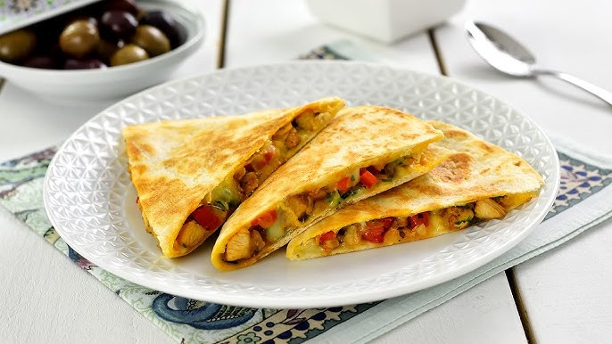
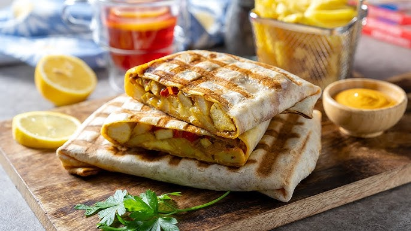
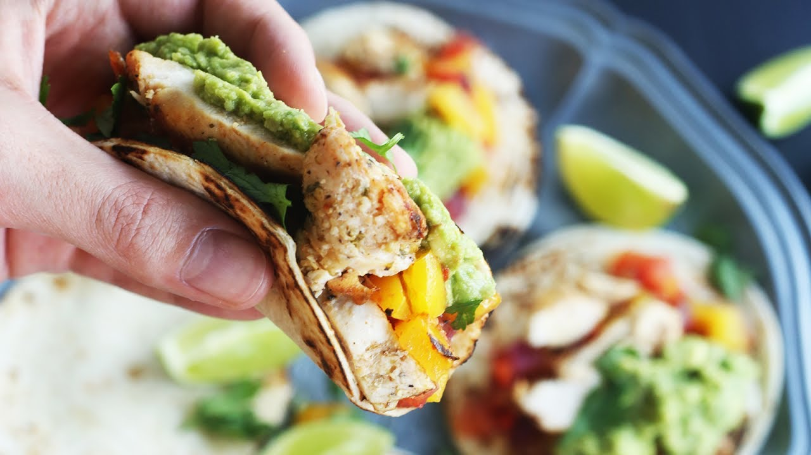

Tacos marocan cu pui
Tacos marocan cu pui este o combinație delicioasă de arome exotice și influențe mexicane. Puiul este marinat în condimente tradiționale marocane, precum chimion, coriandru, turmeric și harissa, apoi este gătit la perfecțiune. Se servește în tortilla caldă, alături de hummus cremos, salată de ceapă roșie cu lămâie, iaurt răcoritor și coriandru proaspăt. O explozie de gusturi savuroase într-o singură mușcătură! 🌮✨



Ingrediente:
- 🎀 500 g piept de pui
- 🎀 2 ardei grași
- 🎀 150 g cașcaval
- 🎀 2 cepe roșii
- 🎀 100 g sos picant cu maioneză
- 🎀 1 legătură pătrunjel
- 🎀 4-5 linguri ulei
- 🎀 3 căței de usturoi
- 🎀 1 linguriță Ras el Hanout
- 🎀 1 linguriță chimion
- 🎀 1 linguriță boia
- 🎀 1 linguriță curcuma
- 🎀 Sare
- 🎀 Pătrunjel verde
- 🎀 4 lipii tip tortilla
- 🎀 200 g cartofi prăjiți
Mod de preparare:
- ✨ Marinarea puiului: Taie pieptul de pui fâșii și amestecă-l cu ulei, usturoi pisat, Ras el Hanout, chimion, boia, curcuma, sare și piper. Lasă-l la marinat 30 de minute.
- ✨ Gătirea: Prăjește puiul într-o tigaie încinsă până devine auriu și fraged. Separat, sotează ceapa și ardeii feliați în puțin ulei.
- ✨ Asamblarea taco-urilor: Încălzește lipiile, adaugă puiul gătit, legumele sotate, cașcaval ras, sosul picant cu maioneză și pătrunjel tocat.
- ✨ Servire: Rulează lipiile și servește-le cu cartofi prăjiți alături!
Un deliciu aromat și perfect pentru iubitorii de condimente! 😍